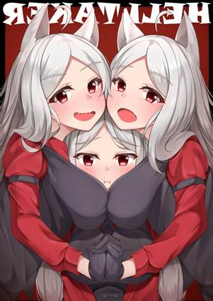

狱犬Cerberi
为活人和死者共同畏惧的狱犬在塔提科斯之河（Tartyx
River）的两岸梭巡。这些多头的冥界猎犬能吐出团状的熔岩，烧灼并禁锢那些越过生死边界之人。大部分狱犬对于鲜肉，尤其是类人生物的血肉都怀着无尽的饥渴。据说一些恶徒会利用这种饥渴将狱犬从河边引走，并放出到凡人的聚居地中。
双头狱犬Two-Headed
Cerberus
双头狱犬被认为是与凡间的狼杂交产生的小型狱犬，它们常常在塔提科斯之河的凡人一侧游荡。它们通常会忽视或是温和地威胁死者的灵魂，但对凡人并非如此。它们会饥渴地攻击那些过于靠近冥界边境之人。
冥界狱犬Underworld
Cerberus
三头的狱犬栖息于冥界深处。这些狡诈而可怖的生物守卫着冥界的大门、厄睿柏斯最为珍贵的宝藏，以及那些试图逃离死者国度的值得注意的灵魂。三头狱犬通常为恶魔服务，但如果任由它们自由行动，它们会把狡猾的灵魂驱赶到迷宫般的冥界旷野里，然后猎杀它们作为运动。
双头狱犬Two-Headed
Cerberus
中型怪兽，守序邪恶
AC：12
(天生护甲)
HP：39
(6d8+12)
速度：40尺
力量15(+2)
敏捷14(+2)
体质14(+2)
智力3(-4)
感知13(+1)
魅力6
(-2)
技能：察觉+5，隐匿+4
伤害免疫：火焰，暗蚀
状态免疫：目盲，魅惑，耳聋，力竭，恐慌，震慑
感官：黑暗视觉60尺，被动察觉15
语言：-
挑战等级：2(450XP)
好斗Aggressive.以一个附赠动作，狱犬可以朝它可见的一个敌对生物移动最多相当于其速度的距离。
多头Multiheaded.狱犬不会被突袭，且它在进行对抗失能的豁免检定时具有优势。
集群战术Pack
Tactics.至少有一个未处于失能的盟友在目标生物5尺内时，狱犬对该生物发动的攻击检定具有优势。
动作Actions
多重攻击Multiattack.狱犬进行两次啃咬攻击。
啃咬Bite.近战武器攻击：命中+4，触及5尺，单一目标。
命中：5（1d6+2）穿刺伤害外加2（1d4）火焰伤害。
吐息武器Breath
Weapon（充能5-6）. 狱犬喷出15尺锥状熔岩。区域内每个生物必须进行DC12的敏捷豁免，失败受到10（3d6）火焰伤害，成功则受到一半伤害。豁免失败的情况下，该生物同时被凝固的岩石束缚。该生物或另一个能触及岩石的生物可以用动作进行DC12的力量（运动）检定，成功则将它从束缚中解救出来。岩石具有AC17和10生命值，它无视火焰、毒素和心灵伤害。
冥界狱犬Underworld
Cerberus
大型怪兽，守序邪恶
AC：16(天生护甲)
HP：104
(11d10+44)
速度：60尺
力量19(+2)
敏捷12(+1)
体质18(+4)
智力10(+0)
感知16(+3)
魅力9
(-1)
技能：运动+7，察觉+,9，隐匿+4
伤害免疫：火焰，暗蚀
状态免疫：目盲，魅惑，耳聋，力竭，恐慌，震慑
感官：真实视觉30尺，被动察觉19
语言：理解所有语言但不会说
挑战等级：6(2300XP)
好斗Aggressive.以一个附赠动作，狱犬可以朝它可见的一个敌对生物移动最多相当于其速度的距离。
多头Multiheaded.狱犬不会被突袭，且它在进行对抗失能的豁免检定时具有优势。
集群战术Pack
Tactics.至少有一个未处于失能的盟友在目标生物5尺内时，狱犬对该生物发动的攻击检定具有优势。
动作Actions
多重攻击Multiattack.狱犬进行三次啃咬攻击。
啃咬Bite.近战武器攻击：命中+7，触及5尺，单一目标。
命中：11（2d6+4）穿刺伤害外加3（1d6）火焰伤害。
吐息武器Breath
Weapon（充能5-6）. 狱犬喷出30尺锥状熔岩。区域内每个生物必须进行DC15的敏捷豁免，失败受到21（6d6）火焰伤害，成功则受到一半伤害。豁免失败的情况下，该生物同时被凝固的岩石束缚。该生物或另一个能触及岩石的生物可以用动作进行DC15的力量（运动）检定，成功则将它从束缚中解救出来。岩石具有AC17和20生命值，它无视火焰、毒素和心灵伤害。
（这就是三头冥界狱犬↓）
